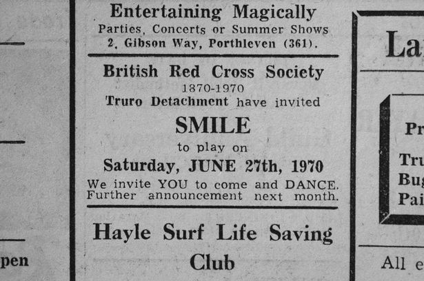

The founder members of Queen met in West London during the late 1960s. Queen Guitarist Brian May formed a band with singer Tim Staffell and keyboardist Chris Smith. To complete the line-up, May placed an advertisement on a college notice board for a "Mitch Mitchell/Ginger Baker type" drummer; Roger Taylor, a young dental student, auditioned and got the job. Smith left the group in early 1969. While attending Ealing Art College in west London, Staffell became friends with fellow student Freddie Bulsara, who was from Zanzibar and of Indian Parsi descent. Bulsara had studied fashion design for a year before switching to graphic art and design, and soon became a keen fan of Smile. He asked if he could join the group as lead singer, but May felt Staffell would not give up that role.
In 1970, Staffell quit Smile. The remaining members accepted Bulsara as lead singer, and recruited Taylor's friend Mike Grose as bassist. The four played their first gig at a fundraising event in Truro on 27 June 1970. Bulsara suggested the group should be renamed to "Queen". At the same time, he decided to change his surname to Mercury. The group played their first London gig on 18 July. The early set consisted of material that would later appear on the first two albums, along with various rock and roll covers. They attracted the attention of producer John Anthony, who was interested in the group's sound but thought they had the wrong bass player. Grose decided not to continue with the band and was replaced by Barry Mitchell. In turn, Mitchell left in January 1971 and was replaced by Doug Bogie for two gigs who was later replaced by John Deacon.